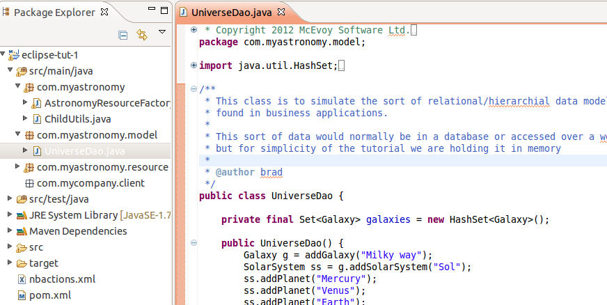

Ok, we're not going to use a real database in this example, we'll just have an in memory mock up.
Create the package com.myastronomy.model under src, and create the class UniverseDao inside it using this code
You're project should now look like this:
